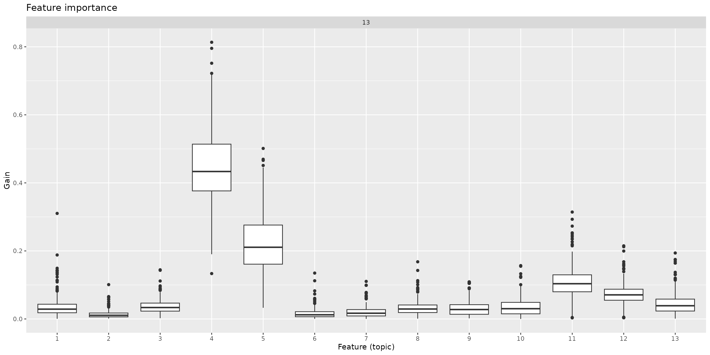
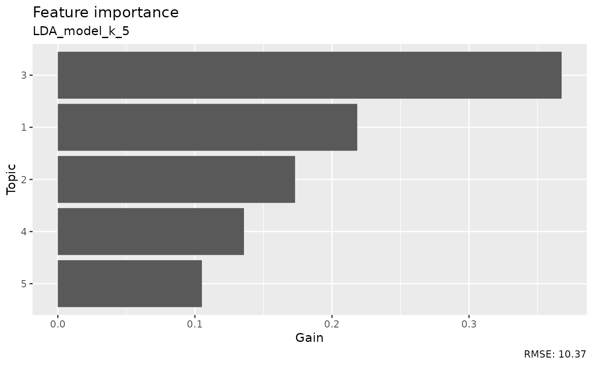

library(rfintext)
library(rfinstats)
library(dplyr)
library(tidytext)
library(xgboost)
library(caret)
library(topicmodels)
library(quanteda)
library(doFuture)
library(forcats)
library(purrr)
plan(multisession, workers = availableCores(logical = FALSE) - 1)
y <- rfinstats::taantuvat |>
filter(kunta %in% unique(aspol$kunta))
y
#> # A tibble: 66 × 5
#> kunta vaesto kokmuutos_2010_2022 suht_muutos_2010_2022 luokka
#> <chr> <int> <int> <dbl> <fct>
#> 1 Enontekiö 1876 -71 -3.78 Hieman taantuva
#> 2 Espoo 247970 60944 24.6 Voimakkaasti kasvava
#> 3 Eura 12507 -1278 -10.2 Voimakkaasti taantuva
#> 4 Hartola 3355 -814 -24.3 Voimakkaasti taantuva
#> 5 Hattula 9657 -266 -2.75 Hieman taantuva
#> 6 Helsinki 588549 80678 13.7 Voimakkaasti kasvava
#> 7 Huittinen 10663 -955 -8.96 Taantuva
#> 8 Hyvinkää 45489 1527 3.36 Hieman kasvava
#> 9 Hämeenlinna 66829 1588 2.38 Hieman kasvava
#> 10 Iitti 7005 -557 -7.95 Taantuva
#> 11 Imatra 28540 -3468 -12.2 Voimakkaasti taantuva
#> 12 Inkoo 5546 -225 -4.06 Hieman taantuva
#> 13 Joensuu 73305 4809 6.56 Kasvava
#> 14 Juva 6962 -1295 -18.6 Voimakkaasti taantuva
#> 15 Järvenpää 38680 6922 17.9 Voimakkaasti kasvava
#> 16 Kaarina 30911 5088 16.5 Voimakkaasti kasvava
#> 17 Kalajoki 12562 -205 -1.63 Hieman taantuva
#> 18 Kauniainen 8689 1667 19.2 Voimakkaasti kasvava
#> 19 Kemiönsaari 7191 -749 -10.4 Voimakkaasti taantuva
#> 20 Kerava 34282 3843 11.2 Voimakkaasti kasvava
#> # ℹ 46 more rows
dtm <- aspol |>
preprocess_corpus() |>
corpus_to_dtm(kunta, LEMMA)
#> Dropped 216172 rows
#> Dropped 2263 rows
#> Dropped 18 rows
#> Dropped 31789 rows
#> Dropped 21951 rows
#> Dropped 4834 rows
optimal_k <- c(5, 15, 18, 21)
system.time(
theta_matrix <- foreach(k = optimal_k) %dofuture% {
dtm |>
quanteda::convert(to = "tm") |> # dfm to tm format
topicmodels::LDA(k = k, control = list(seed = 1234)) |> # LDA model
tidytext::tidy(matrix = "gamma") |> # Extract theta matrix with probabilities of topics per document
filter(document %in% y$kunta) |> # Filter out docs made by regions
tidytext::cast_dfm(document = document, term = topic, value = gamma) # Data frame to dfm matrix
}
)
#> user system elapsed
#> 2.662 0.069 76.505
names(theta_matrix) <- paste0("k_", optimal_k)
theta_matrix
#> $k_5
#> Document-feature matrix of: 66 documents, 5 features (0.00% sparse) and 0 docvars.
#> features
#> docs 1 2 3 4 5
#> Enontekiö 9.032638e-05 9.032833e-05 9.996387e-01 9.033274e-05 9.033364e-05
#> Espoo 6.083062e-01 3.916177e-01 2.536362e-05 2.536342e-05 2.536336e-05
#> Eura 8.721847e-05 8.723096e-05 8.358125e-01 8.722709e-05 1.639258e-01
#> Hartola 1.065831e-04 5.937241e-02 9.403078e-01 1.066054e-04 1.065918e-04
#> Hattula 2.160958e-01 1.411757e-04 1.466987e-01 3.504088e-01 2.866555e-01
#> Helsinki 1.288224e-05 9.999485e-01 1.288144e-05 1.288136e-05 1.288121e-05
#> Huittinen 2.602115e-02 4.139870e-02 2.239730e-01 3.582770e-01 3.503302e-01
#> Hyvinkää 5.001871e-02 4.341314e-01 1.971469e-04 1.393909e-01 3.762619e-01
#> Hämeenlinna 4.560199e-05 1.671002e-02 4.094647e-01 2.718928e-01 3.018868e-01
#> Iitti 5.997081e-01 2.195865e-04 3.764446e-01 2.340814e-02 2.195796e-04
#> Imatra 2.528021e-04 4.310569e-01 2.528459e-04 3.828590e-01 1.855784e-01
#> Inkoo 6.957614e-01 3.379557e-02 6.115260e-05 1.358971e-01 1.344848e-01
#> Joensuu 7.061641e-02 1.959810e-01 3.038128e-02 4.203315e-01 2.826898e-01
#> Juva 6.268576e-05 6.269581e-05 9.997492e-01 6.269661e-05 6.270234e-05
#> Järvenpää 1.161159e-04 6.719541e-01 1.161162e-04 2.464807e-01 8.133289e-02
#> Kaarina 9.215531e-01 5.076300e-02 3.400035e-05 3.400405e-05 2.761594e-02
#> Kalajoki 7.101379e-04 4.845004e-01 1.204904e-01 2.702683e-01 1.240308e-01
#> Kauniainen 2.945008e-01 5.195131e-01 5.235316e-02 2.719194e-02 1.064409e-01
#> Kemiönsaari 8.999793e-01 2.894659e-05 9.993387e-02 2.895200e-05 2.894976e-05
#> Kerava 9.997095e-01 7.263020e-05 7.261330e-05 7.262255e-05 7.262309e-05
#> [ reached max_ndoc ... 46 more documents ]
#>
#> $k_15
#> Document-feature matrix of: 66 documents, 15 features (0.00% sparse) and 0 docvars.
#> features
#> docs 1 2 3 4 5 6 7 8 9 10 11 12 13 14 15
#> Enontekiö 1.847205e-05 1.847205e-05 9.997414e-01 1.847205e-05 1.847205e-05 1.847205e-05 1.847205e-05 1.847205e-05 1.847205e-05 1.847205e-05 1.847205e-05 1.847205e-05 1.847205e-05 1.847205e-05 1.847205e-05
#> Espoo 2.571659e-01 5.185437e-06 5.185437e-06 5.185437e-06 5.185437e-06 5.185437e-06 4.901010e-01 5.185437e-06 2.526708e-01 5.185437e-06 5.185437e-06 5.185437e-06 5.185437e-06 5.185437e-06 5.185437e-06
#> Eura 1.783824e-05 1.783824e-05 8.712944e-01 1.783824e-05 1.284737e-01 1.783824e-05 1.783824e-05 1.783824e-05 1.783824e-05 1.783824e-05 1.783824e-05 1.783824e-05 1.783824e-05 1.783824e-05 1.783824e-05
#> Hartola 2.179911e-05 2.179911e-05 9.996948e-01 2.179911e-05 2.179911e-05 2.179911e-05 2.179911e-05 2.179911e-05 2.179911e-05 2.179911e-05 2.179911e-05 2.179911e-05 2.179911e-05 2.179911e-05 2.179911e-05
#> Hattula 1.318274e-01 2.886974e-05 2.886974e-05 3.451349e-02 2.886974e-05 4.942984e-02 2.886974e-05 2.886974e-05 2.886974e-05 2.886974e-05 2.380413e-01 4.463843e-01 9.954383e-02 2.886974e-05 2.886974e-05
#> Helsinki 2.633718e-06 2.633718e-06 2.633718e-06 2.633718e-06 2.633718e-06 2.633718e-06 2.633718e-06 2.633718e-06 9.999631e-01 2.633718e-06 2.633718e-06 2.633718e-06 2.633718e-06 2.633718e-06 2.633718e-06
#> Huittinen 8.854705e-06 8.854705e-06 7.099825e-02 8.854705e-06 8.854705e-06 8.854705e-06 8.854705e-06 8.854705e-06 8.854705e-06 8.854705e-06 1.817732e-01 8.854705e-06 8.854705e-06 8.854705e-06 7.471223e-01
#> Hyvinkää 1.529172e-01 2.039554e-01 4.031906e-05 4.031906e-05 4.031906e-05 4.031906e-05 4.031906e-05 4.031906e-05 4.031906e-05 2.925015e-01 4.031906e-05 3.501824e-01 4.031906e-05 4.031906e-05 4.031906e-05
#> Hämeenlinna 9.323907e-06 9.323907e-06 9.323907e-06 9.323907e-06 3.621443e-02 9.323907e-06 9.323907e-06 9.323907e-06 9.323907e-06 9.260803e-01 9.323907e-06 3.195973e-02 9.323907e-06 5.642948e-03 9.323907e-06
#> Iitti 4.491028e-05 4.491028e-05 4.491028e-05 3.774786e-02 6.396132e-02 8.438659e-01 4.491028e-05 4.491028e-05 5.393090e-02 4.491028e-05 4.491028e-05 4.491028e-05 4.491028e-05 4.491028e-05 4.491028e-05
#> Imatra 5.171267e-05 5.171267e-05 5.171267e-05 5.171267e-05 5.171267e-05 5.171267e-05 5.171267e-05 2.459378e-02 5.171267e-05 8.540750e-01 5.171267e-05 5.171267e-05 5.171267e-05 1.207107e-01 5.171267e-05
#> Inkoo 3.010774e-01 1.250435e-05 1.250435e-05 1.250435e-05 1.250435e-05 1.722674e-01 1.250435e-05 1.653030e-01 1.250435e-05 2.608699e-01 1.250435e-05 1.250435e-05 1.003573e-01 1.250435e-05 1.250435e-05
#> Joensuu 4.146722e-06 4.146722e-06 4.146722e-06 1.148913e-02 4.146722e-06 4.146722e-06 7.236814e-02 2.505442e-02 9.811375e-03 3.098657e-01 4.146722e-06 4.146722e-06 4.146722e-06 2.126302e-01 3.587478e-01
#> Juva 1.281970e-05 1.281970e-05 9.998205e-01 1.281970e-05 1.281970e-05 1.281970e-05 1.281970e-05 1.281970e-05 1.281970e-05 1.281970e-05 1.281970e-05 1.281970e-05 1.281970e-05 1.281970e-05 1.281970e-05
#> Järvenpää 2.374517e-05 2.374517e-05 2.374517e-05 2.374517e-05 2.374517e-05 2.374517e-05 2.374517e-05 1.441686e-02 1.328049e-01 2.374517e-05 2.374517e-05 2.271941e-01 2.374517e-05 6.253229e-01 2.374517e-05
#> Kaarina 1.798605e-01 6.952084e-06 6.952084e-06 6.952084e-06 6.952084e-06 4.831281e-02 6.952084e-06 7.717433e-01 6.952084e-06 6.952084e-06 6.952084e-06 6.952084e-06 6.952084e-06 6.952084e-06 6.952084e-06
#> Kalajoki 1.324648e-01 2.727010e-01 7.696495e-02 2.833133e-02 1.453813e-04 1.453813e-04 1.453813e-04 1.453813e-04 1.453813e-04 1.453813e-04 1.453813e-04 1.453813e-04 1.453813e-04 1.453813e-04 4.880841e-01
#> Kauniainen 7.499072e-06 7.499072e-06 7.499072e-06 7.499072e-06 7.499072e-06 7.499072e-06 7.499072e-06 7.499072e-06 7.499072e-06 7.499072e-06 7.499072e-06 7.499072e-06 9.998950e-01 7.499072e-06 7.499072e-06
#> Kemiönsaari 5.919439e-06 5.919439e-06 5.919439e-06 5.919439e-06 5.919439e-06 9.999171e-01 5.919439e-06 5.919439e-06 5.919439e-06 5.919439e-06 5.919439e-06 5.919439e-06 5.919439e-06 5.919439e-06 5.919439e-06
#> Kerava 9.997921e-01 1.485042e-05 1.485042e-05 1.485042e-05 1.485042e-05 1.485042e-05 1.485042e-05 1.485042e-05 1.485042e-05 1.485042e-05 1.485042e-05 1.485042e-05 1.485042e-05 1.485042e-05 1.485042e-05
#> [ reached max_ndoc ... 46 more documents ]
#>
#> $k_18
#> Document-feature matrix of: 66 documents, 18 features (0.00% sparse) and 0 docvars.
#> features
#> docs 1 2 3 4 5 6 7 8 9 10 11 12 13 14 15 16 17 18
#> Enontekiö 1.337088e-05 1.337088e-05 9.997727e-01 1.337088e-05 1.337088e-05 1.337088e-05 1.337088e-05 1.337088e-05 1.337088e-05 1.337088e-05 1.337088e-05 1.337088e-05 1.337088e-05 1.337088e-05 1.337088e-05 1.337088e-05 1.337088e-05 1.337088e-05
#> Espoo 2.535587e-02 3.753348e-06 3.753348e-06 3.753348e-06 3.753348e-06 3.753348e-06 1.629021e-01 3.753348e-06 8.116857e-01 3.753348e-06 3.753348e-06 3.753348e-06 3.753348e-06 3.753348e-06 3.753348e-06 3.753348e-06 3.753348e-06 3.753348e-06
#> Eura 1.291208e-05 1.291208e-05 8.553672e-01 1.291208e-05 1.291208e-05 1.291208e-05 1.291208e-05 1.291208e-05 1.291208e-05 1.291208e-05 1.291208e-05 1.291208e-05 1.291208e-05 1.291208e-05 1.291208e-05 1.291208e-05 1.444262e-01 1.291208e-05
#> Hartola 1.577925e-05 1.577925e-05 9.910494e-01 1.577925e-05 1.577925e-05 1.577925e-05 1.577925e-05 1.577925e-05 1.577925e-05 1.577925e-05 1.577925e-05 1.577925e-05 1.577925e-05 1.577925e-05 1.577925e-05 8.698131e-03 1.577925e-05 1.577925e-05
#> Hattula 8.402685e-02 2.089761e-05 2.089761e-05 8.995674e-02 2.089761e-05 5.903744e-02 2.089761e-05 2.089761e-05 2.089761e-05 2.089761e-05 2.704816e-01 3.863750e-01 1.098716e-01 2.089761e-05 2.089761e-05 2.089761e-05 2.089761e-05 2.089761e-05
#> Helsinki 1.906341e-06 1.906341e-06 1.906341e-06 1.906341e-06 1.906341e-06 1.906341e-06 1.906341e-06 1.906341e-06 1.906341e-06 1.906341e-06 1.906341e-06 1.906341e-06 1.906341e-06 1.906341e-06 1.906341e-06 9.999676e-01 1.906341e-06 1.906341e-06
#> Huittinen 6.409301e-06 6.409301e-06 8.481066e-02 1.361348e-01 6.409301e-06 6.409301e-06 6.409301e-06 6.409301e-06 6.409301e-06 6.409301e-06 1.636941e-01 6.409301e-06 6.409301e-06 6.409301e-06 6.152707e-01 6.409301e-06 6.409301e-06 6.409301e-06
#> Hyvinkää 1.341747e-01 1.658064e-01 2.918596e-05 2.918596e-05 2.918596e-05 2.918596e-05 2.918596e-05 1.939339e-02 2.918596e-05 3.625177e-01 2.918596e-05 2.094209e-01 2.918596e-05 1.083367e-01 2.918596e-05 2.918596e-05 2.918596e-05 2.918596e-05
#> Hämeenlinna 6.748930e-06 6.748930e-06 6.748930e-06 6.748930e-06 6.748930e-06 6.748930e-06 6.748930e-06 6.748930e-06 6.748930e-06 9.835218e-01 6.748930e-06 4.046524e-03 6.748930e-06 6.748930e-06 6.748930e-06 6.748930e-06 1.233045e-02 6.748930e-06
#> Iitti 3.250972e-05 3.250972e-05 3.250972e-05 3.250972e-05 1.347056e-01 7.615752e-01 3.250972e-05 3.250972e-05 3.250972e-05 3.250972e-05 3.250972e-05 3.250972e-05 3.250972e-05 3.250972e-05 3.250972e-05 4.385556e-02 2.107598e-02 3.836499e-02
#> Imatra 3.743434e-05 3.743434e-05 3.743434e-05 3.743434e-05 1.564314e-01 3.743434e-05 3.743434e-05 3.743434e-05 3.743434e-05 7.484984e-01 3.743434e-05 3.743434e-05 3.743434e-05 3.743434e-05 3.743434e-05 9.450871e-02 3.743434e-05 3.743434e-05
#> Inkoo 2.494704e-01 9.051087e-06 9.051087e-06 9.051087e-06 9.051087e-06 2.874225e-01 9.051087e-06 2.173536e-01 9.051087e-06 1.581486e-01 9.051087e-06 9.051087e-06 6.994065e-02 9.051087e-06 1.755563e-02 9.051087e-06 9.051087e-06 9.051087e-06
#> Joensuu 3.001494e-06 3.001494e-06 3.001494e-06 3.001494e-06 3.001494e-06 3.001494e-06 3.640514e-02 3.710358e-02 3.001494e-06 1.163882e-01 3.001494e-06 3.001494e-06 3.001494e-06 3.001494e-06 7.172273e-01 5.512200e-02 3.001494e-06 3.771772e-02
#> Juva 9.279355e-06 9.279355e-06 9.998423e-01 9.279355e-06 9.279355e-06 9.279355e-06 9.279355e-06 9.279355e-06 9.279355e-06 9.279355e-06 9.279355e-06 9.279355e-06 9.279355e-06 9.279355e-06 9.279355e-06 9.279355e-06 9.279355e-06 9.279355e-06
#> Järvenpää 1.718797e-05 1.718797e-05 1.718797e-05 1.718797e-05 1.718797e-05 1.718797e-05 1.718797e-05 1.718797e-05 1.718797e-05 1.718797e-05 1.718797e-05 1.431578e-01 1.718797e-05 6.918080e-01 1.718797e-05 1.647764e-01 1.718797e-05 1.718797e-05
#> Kaarina 9.429077e-02 5.032108e-06 5.032108e-06 5.032108e-06 5.032108e-06 2.819987e-02 2.522839e-02 8.522105e-01 5.032108e-06 5.032108e-06 5.032108e-06 5.032108e-06 5.032108e-06 5.032108e-06 5.032108e-06 5.032108e-06 5.032108e-06 5.032108e-06
#> Kalajoki 1.052597e-04 1.052597e-04 1.052597e-04 8.466917e-02 1.052597e-04 1.052597e-04 1.052597e-04 1.052597e-04 4.640728e-02 1.052597e-04 7.981237e-02 1.052597e-04 1.052597e-04 4.277338e-01 2.321634e-01 8.019986e-02 1.052597e-04 4.785623e-02
#> Kauniainen 5.428039e-06 5.428039e-06 5.428039e-06 5.428039e-06 5.428039e-06 5.428039e-06 5.428039e-06 5.428039e-06 5.428039e-06 5.428039e-06 5.428039e-06 5.428039e-06 9.999077e-01 5.428039e-06 5.428039e-06 5.428039e-06 5.428039e-06 5.428039e-06
#> Kemiönsaari 4.284643e-06 4.284643e-06 4.284643e-06 4.284643e-06 4.284643e-06 9.999272e-01 4.284643e-06 4.284643e-06 4.284643e-06 4.284643e-06 4.284643e-06 4.284643e-06 4.284643e-06 4.284643e-06 4.284643e-06 4.284643e-06 4.284643e-06 4.284643e-06
#> Kerava 9.998173e-01 1.074931e-05 1.074931e-05 1.074931e-05 1.074931e-05 1.074931e-05 1.074931e-05 1.074931e-05 1.074931e-05 1.074931e-05 1.074931e-05 1.074931e-05 1.074931e-05 1.074931e-05 1.074931e-05 1.074931e-05 1.074931e-05 1.074931e-05
#> [ reached max_ndoc ... 46 more documents ]
#>
#> $k_21
#> Document-feature matrix of: 66 documents, 21 features (0.00% sparse) and 0 docvars.
#> features
#> docs 1 2 3 4 5 6 7 8 9 10 11 12 13 14 15 16 17 18 19 20
#> Enontekiö 1.148784e-05 1.148784e-05 9.997702e-01 1.148784e-05 1.148784e-05 1.148784e-05 1.148784e-05 1.148784e-05 1.148784e-05 1.148784e-05 1.148784e-05 1.148784e-05 1.148784e-05 1.148784e-05 1.148784e-05 1.148784e-05 1.148784e-05 1.148784e-05 1.148784e-05 1.148784e-05
#> Espoo 3.751543e-02 3.224758e-06 3.224758e-06 3.224758e-06 3.224758e-06 3.224758e-06 2.639322e-02 3.224758e-06 9.360333e-01 3.224758e-06 3.224758e-06 3.224758e-06 3.224758e-06 3.224758e-06 3.224758e-06 3.224758e-06 3.224758e-06 3.224758e-06 3.224758e-06 3.224758e-06
#> Eura 1.109365e-05 1.109365e-05 9.997781e-01 1.109365e-05 1.109365e-05 1.109365e-05 1.109365e-05 1.109365e-05 1.109365e-05 1.109365e-05 1.109365e-05 1.109365e-05 1.109365e-05 1.109365e-05 1.109365e-05 1.109365e-05 1.109365e-05 1.109365e-05 1.109365e-05 1.109365e-05
#> Hartola 1.355703e-05 1.355703e-05 9.064946e-01 1.355703e-05 1.355703e-05 9.324785e-02 1.355703e-05 1.355703e-05 1.355703e-05 1.355703e-05 1.355703e-05 1.355703e-05 1.355703e-05 1.355703e-05 1.355703e-05 1.355703e-05 1.355703e-05 1.355703e-05 1.355703e-05 1.355703e-05
#> Hattula 1.411036e-01 1.795456e-05 3.089126e-02 1.209986e-01 1.795456e-05 1.795456e-05 1.795456e-05 1.795456e-05 1.795456e-05 1.795456e-05 1.746148e-01 2.951927e-01 1.035559e-01 1.795456e-05 1.795456e-05 1.795456e-05 1.795456e-05 1.795456e-05 1.795456e-05 1.795456e-05
#> Helsinki 1.637868e-06 1.637868e-06 1.637868e-06 1.637868e-06 1.637868e-06 1.637868e-06 1.637868e-06 1.637868e-06 1.637868e-06 1.637868e-06 1.637868e-06 1.637868e-06 1.637868e-06 1.637868e-06 1.637868e-06 9.999672e-01 1.637868e-06 1.637868e-06 1.637868e-06 1.637868e-06
#> Huittinen 5.506669e-06 1.851798e-01 5.506669e-06 2.524699e-01 8.179620e-02 9.652350e-02 5.506669e-06 5.506669e-06 5.506669e-06 5.506669e-06 1.584532e-01 5.506669e-06 5.506669e-06 5.506669e-06 1.486547e-01 5.506669e-06 5.506669e-06 5.506669e-06 7.684557e-02 5.506669e-06
#> Hyvinkää 2.507563e-05 2.507563e-05 2.507563e-05 2.507563e-05 2.507563e-05 2.507563e-05 2.507563e-05 2.507563e-05 2.507563e-05 1.515906e-01 2.507563e-05 2.507563e-05 2.507563e-05 2.507563e-05 2.507563e-05 2.507563e-05 2.507563e-05 2.507563e-05 8.479330e-01 2.507563e-05
#> Hämeenlinna 5.798467e-06 5.798467e-06 5.798467e-06 5.798467e-06 5.798467e-06 5.798467e-06 5.798467e-06 5.798467e-06 5.798467e-06 9.864797e-01 5.798467e-06 1.341009e-02 5.798467e-06 5.798467e-06 5.798467e-06 5.798467e-06 5.798467e-06 5.798467e-06 5.798467e-06 5.798467e-06
#> Iitti 1.103697e-01 2.793129e-05 2.793129e-05 2.793129e-05 2.793129e-05 3.831504e-01 2.793129e-05 2.793129e-05 2.793129e-05 2.793129e-05 2.793129e-05 2.793129e-05 2.793129e-05 2.793129e-05 2.793129e-05 2.793129e-05 2.793129e-05 5.472339e-02 2.793129e-05 2.793129e-05
#> Imatra 3.216236e-05 3.216236e-05 3.216236e-05 3.216236e-05 3.216236e-05 3.216236e-05 3.216236e-05 3.216236e-05 3.216236e-05 8.405213e-01 3.216236e-05 3.216236e-05 3.216236e-05 3.216236e-05 3.216236e-05 1.588676e-01 3.216236e-05 3.216236e-05 3.216236e-05 3.216236e-05
#> Inkoo 7.776407e-06 7.776407e-06 7.776407e-06 7.776407e-06 7.776407e-06 7.776407e-06 7.776407e-06 2.405108e-01 7.776407e-06 2.269880e-02 7.776407e-06 7.776407e-06 7.776407e-06 7.776407e-06 7.776407e-06 7.776407e-06 7.776407e-06 7.776407e-06 4.829238e-02 7.776407e-06
#> Joensuu 2.578789e-06 2.578789e-06 2.578789e-06 2.578789e-06 2.578789e-06 2.578789e-06 2.578789e-06 2.578789e-06 2.578789e-06 1.158905e-02 2.578789e-06 2.578789e-06 2.578789e-06 2.578789e-06 9.883620e-01 2.578789e-06 2.578789e-06 2.578789e-06 2.578789e-06 2.578789e-06
#> Juva 7.972528e-06 7.972528e-06 9.998405e-01 7.972528e-06 7.972528e-06 7.972528e-06 7.972528e-06 7.972528e-06 7.972528e-06 7.972528e-06 7.972528e-06 7.972528e-06 7.972528e-06 7.972528e-06 7.972528e-06 7.972528e-06 7.972528e-06 7.972528e-06 7.972528e-06 7.972528e-06
#> Järvenpää 1.476735e-05 1.476735e-05 1.476735e-05 1.476735e-05 1.476735e-05 1.476735e-05 1.476735e-05 1.476735e-05 1.476735e-05 1.476735e-05 1.476735e-05 1.014059e-01 1.476735e-05 3.295210e-01 1.476735e-05 1.183156e-01 1.476735e-05 1.476735e-05 3.134447e-01 1.370765e-01
#> Kaarina 4.323429e-06 4.323429e-06 4.323429e-06 4.323429e-06 4.323429e-06 4.323429e-06 4.323429e-06 9.999135e-01 4.323429e-06 4.323429e-06 4.323429e-06 4.323429e-06 4.323429e-06 4.323429e-06 4.323429e-06 4.323429e-06 4.323429e-06 4.323429e-06 4.323429e-06 4.323429e-06
#> Kalajoki 7.225404e-02 7.393303e-01 9.043539e-05 1.867879e-01 9.043539e-05 9.043539e-05 9.043539e-05 9.043539e-05 9.043539e-05 9.043539e-05 9.043539e-05 9.043539e-05 9.043539e-05 9.043539e-05 9.043539e-05 9.043539e-05 9.043539e-05 9.043539e-05 9.043539e-05 9.043539e-05
#> Kauniainen 4.663600e-06 4.663600e-06 4.663600e-06 4.663600e-06 4.663600e-06 4.663600e-06 4.663600e-06 4.663600e-06 4.663600e-06 4.663600e-06 4.663600e-06 4.663600e-06 9.999067e-01 4.663600e-06 4.663600e-06 4.663600e-06 4.663600e-06 4.663600e-06 4.663600e-06 4.663600e-06
#> Kemiönsaari 3.681230e-06 3.681230e-06 3.681230e-06 3.681230e-06 3.681230e-06 3.681230e-06 3.681230e-06 3.681230e-06 3.681230e-06 3.681230e-06 3.681230e-06 3.681230e-06 3.681230e-06 3.681230e-06 3.681230e-06 3.681230e-06 3.681230e-06 3.681230e-06 3.681230e-06 3.681230e-06
#> Kerava 9.235463e-06 9.235463e-06 9.235463e-06 9.235463e-06 9.235463e-06 9.235463e-06 9.235463e-06 9.235463e-06 9.235463e-06 9.235463e-06 9.235463e-06 9.235463e-06 9.235463e-06 9.235463e-06 9.235463e-06 9.235463e-06 9.235463e-06 9.235463e-06 9.998153e-01 9.235463e-06
#> [ reached max_ndoc ... 46 more documents, reached max_nfeat ... 1 more feature ]
trainidx <- createDataPartition(y$suht_muutos_2010_2022, p = .8,
list = FALSE,
times = 1)
response_var <- "suht_muutos_2010_2022"
labels <- list(train = y[trainidx, ][[response_var]],
test = y[-trainidx, ][[response_var]])
dat <- list()
for (i in seq_along(theta_matrix)) {
dat[[i]] <- list(
train = dfm_subset(theta_matrix[[i]], docname_ %in% y$kunta[trainidx]),
test = dfm_subset(theta_matrix[[i]], docname_ %in% y$kunta[-trainidx])
)
}
names(dat) <- names(theta_matrix)
xgb_data <- list()
for (i in seq_along(dat)) {
train <- dat[[i]]$train
test <- dat[[i]]$test
xgb_data[[i]] <- list(
train = xgb.DMatrix(data = train, label = labels$train),
test = xgb.DMatrix(data = test, label = labels$test)
)
}
names(xgb_data) <- names(dat)
gs <- tidyr::expand_grid(
booster = "gbtree",
eta = seq(0.01, 0.1, by = 0.2),
max_depth = seq(3, 7, by = 1),
gamma = seq(0, 4, by = 2),
subsample = seq(0.5, 1, by = 0.25),
colsample_bylevel = seq(0.5, 1, by = 0.25),
nrounds = seq(5, 55, by = 25),
objective = "reg:squarederror",
num_parallel_tree = 2
)
gs
#> # A tibble: 405 × 9
#> booster eta max_depth gamma subsample colsample_bylevel nrounds objective num_parallel_tree
#> <chr> <dbl> <dbl> <dbl> <dbl> <dbl> <dbl> <chr> <dbl>
#> 1 gbtree 0.01 3 0 0.5 0.5 5 reg:squarederror 2
#> 2 gbtree 0.01 3 0 0.5 0.5 30 reg:squarederror 2
#> 3 gbtree 0.01 3 0 0.5 0.5 55 reg:squarederror 2
#> 4 gbtree 0.01 3 0 0.5 0.75 5 reg:squarederror 2
#> 5 gbtree 0.01 3 0 0.5 0.75 30 reg:squarederror 2
#> 6 gbtree 0.01 3 0 0.5 0.75 55 reg:squarederror 2
#> 7 gbtree 0.01 3 0 0.5 1 5 reg:squarederror 2
#> 8 gbtree 0.01 3 0 0.5 1 30 reg:squarederror 2
#> 9 gbtree 0.01 3 0 0.5 1 55 reg:squarederror 2
#> 10 gbtree 0.01 3 0 0.75 0.5 5 reg:squarederror 2
#> 11 gbtree 0.01 3 0 0.75 0.5 30 reg:squarederror 2
#> 12 gbtree 0.01 3 0 0.75 0.5 55 reg:squarederror 2
#> 13 gbtree 0.01 3 0 0.75 0.75 5 reg:squarederror 2
#> 14 gbtree 0.01 3 0 0.75 0.75 30 reg:squarederror 2
#> 15 gbtree 0.01 3 0 0.75 0.75 55 reg:squarederror 2
#> 16 gbtree 0.01 3 0 0.75 1 5 reg:squarederror 2
#> 17 gbtree 0.01 3 0 0.75 1 30 reg:squarederror 2
#> 18 gbtree 0.01 3 0 0.75 1 55 reg:squarederror 2
#> 19 gbtree 0.01 3 0 1 0.5 5 reg:squarederror 2
#> 20 gbtree 0.01 3 0 1 0.5 30 reg:squarederror 2
#> # ℹ 385 more rows
# foreach(i = 1:nrow(gs[1:10,]), .combine = "rbind", .inorder = FALSE) %dofuture% {
# # print(
# gs[i, ] |>
# mutate(xgb_model = purrr::pmap(gs[i, ], function(...) {
# xgboost::xgb.train(data = xgb_data$k_5[["train"]], ...)
# }
# ))
#
# # )
# }
# for (i in 1:nrow(gs[1:10,])) {
# print(
# gs[i, ] |>
# mutate(xgb_model = purrr::pmap(gs[i, ], function(...) xgb.train(data = xgb_data$k_5[["train"]], ...),
# .progress = TRUE))
#
# )
# }
system.time(
gs <- bind_rows(
lapply(xgb_data, function(x) {
gs |> mutate(xgb_model = purrr::pmap(gs, function(...) mod(x[["train"]], ...), .progress = TRUE))
}), .id = "lda_model"
)
)
#> ■■■■■■■■■■■■■■■■■■■■■■ 69% | ETA: 2s
#> ■■■■■■■■■■■■■■■■■■■■■ 66% | ETA: 2s
#> ■■■■■■■■■■■■■■■■■■■ 61% | ETA: 2s
#> ■■■■■■■■■■■■■■■■■■■■■■■■■■■■■■■ 100% | ETA: 0s
#> ■■■■■■■■■■■■■■■■■ 53% | ETA: 3s
#> ■■■■■■■■■■■■■■■■■■■■■■■■■■■■■ 92% | ETA: 1s
#> user system elapsed
#> 80.630 7.520 25.242
gs
#> # A tibble: 1,620 × 11
#> lda_model booster eta max_depth gamma subsample colsample_bylevel nrounds objective num_parallel_tree xgb_model
#> <chr> <chr> <dbl> <dbl> <dbl> <dbl> <dbl> <dbl> <chr> <dbl> <list>
#> 1 k_5 gbtree 0.01 3 0 0.5 0.5 5 reg:squarederror 2 <xgb.Bstr>
#> 2 k_5 gbtree 0.01 3 0 0.5 0.5 30 reg:squarederror 2 <xgb.Bstr>
#> 3 k_5 gbtree 0.01 3 0 0.5 0.5 55 reg:squarederror 2 <xgb.Bstr>
#> 4 k_5 gbtree 0.01 3 0 0.5 0.75 5 reg:squarederror 2 <xgb.Bstr>
#> 5 k_5 gbtree 0.01 3 0 0.5 0.75 30 reg:squarederror 2 <xgb.Bstr>
#> 6 k_5 gbtree 0.01 3 0 0.5 0.75 55 reg:squarederror 2 <xgb.Bstr>
#> 7 k_5 gbtree 0.01 3 0 0.5 1 5 reg:squarederror 2 <xgb.Bstr>
#> 8 k_5 gbtree 0.01 3 0 0.5 1 30 reg:squarederror 2 <xgb.Bstr>
#> 9 k_5 gbtree 0.01 3 0 0.5 1 55 reg:squarederror 2 <xgb.Bstr>
#> 10 k_5 gbtree 0.01 3 0 0.75 0.5 5 reg:squarederror 2 <xgb.Bstr>
#> 11 k_5 gbtree 0.01 3 0 0.75 0.5 30 reg:squarederror 2 <xgb.Bstr>
#> 12 k_5 gbtree 0.01 3 0 0.75 0.5 55 reg:squarederror 2 <xgb.Bstr>
#> 13 k_5 gbtree 0.01 3 0 0.75 0.75 5 reg:squarederror 2 <xgb.Bstr>
#> 14 k_5 gbtree 0.01 3 0 0.75 0.75 30 reg:squarederror 2 <xgb.Bstr>
#> 15 k_5 gbtree 0.01 3 0 0.75 0.75 55 reg:squarederror 2 <xgb.Bstr>
#> 16 k_5 gbtree 0.01 3 0 0.75 1 5 reg:squarederror 2 <xgb.Bstr>
#> 17 k_5 gbtree 0.01 3 0 0.75 1 30 reg:squarederror 2 <xgb.Bstr>
#> 18 k_5 gbtree 0.01 3 0 0.75 1 55 reg:squarederror 2 <xgb.Bstr>
#> 19 k_5 gbtree 0.01 3 0 1 0.5 5 reg:squarederror 2 <xgb.Bstr>
#> 20 k_5 gbtree 0.01 3 0 1 0.5 30 reg:squarederror 2 <xgb.Bstr>
#> # ℹ 1,600 more rows
# gs_list <- map2(xgb_data, gs_list, function(xgb_dat, xgb_mod) {
# xgb_mod |> mutate(error = purrr::map_dbl(xgb_model, function(mod) {
# compute_error(mod, xgb_dat[["test"]])
# }))
# } )
# gs_list
gs <- gs |>
mutate(error = purrr::map2_dbl(xgb_model, lda_model, function(xgbmod, ldamod) {
pred <- stats::predict(xgbmod, xgb_data[[ldamod]][["test"]])
RMSE(labels$test, pred)
}))
gs |> arrange(error)
#> # A tibble: 1,620 × 12
#> lda_model booster eta max_depth gamma subsample colsample_bylevel nrounds
#> <chr> <chr> <dbl> <dbl> <dbl> <dbl> <dbl> <dbl>
#> 1 k_21 gbtree 0.01 6 4 1 1 55
#> 2 k_21 gbtree 0.01 7 4 1 1 55
#> 3 k_21 gbtree 0.01 6 2 1 0.75 55
#> 4 k_21 gbtree 0.01 6 2 1 1 55
#> 5 k_21 gbtree 0.01 4 2 1 0.75 55
#> 6 k_21 gbtree 0.01 5 2 1 0.75 55
#> 7 k_21 gbtree 0.01 5 4 1 0.75 55
#> 8 k_21 gbtree 0.01 7 4 1 0.75 55
#> 9 k_21 gbtree 0.01 7 2 1 1 55
#> 10 k_18 gbtree 0.01 7 0 1 0.75 55
#> # ℹ 1,610 more rows
#> # ℹ 4 more variables: objective <chr>, num_parallel_tree <dbl>,
#> # xgb_model <list>, error <dbl>
gs |>
ggplot(aes(x = error, y = factor(lda_model, levels = names(theta_matrix)))) +
geom_boxplot() +
labs(title = "XGB model errors", y = "LDA model")
xgb.importance(feature_names = colnames(theta_matrix[[ gs[1,]$lda_model]]),
model = gs[1,]$xgb_model[[1]])
#> Feature Gain Cover Frequency
#> <char> <num> <num> <num>
#> 1: 2 0.31919170 0.2771392 0.2321429
#> 2: 3 0.31253951 0.3065134 0.3750000
#> 3: 1 0.15151759 0.1353768 0.1071429
#> 4: 4 0.14041895 0.1494253 0.1607143
#> 5: 5 0.07633224 0.1315453 0.1250000
gs |>
slice_min(error, n = 1, by = lda_model) %>%
split(1:nrow(.)) |>
map(function(df) {
importance <- xgb.importance(feature_names = colnames(theta_matrix[[df$lda_model]]), model = df$xgb_model[[1]]) |>
ggplot(aes(x = Gain, y = reorder(Feature, Gain))) +
geom_col() +
labs(title = "Feature importance", subtitle = paste0("LDA_model_", df$lda_model), y = "Topic" , caption = paste0("RMSE: ", round(df$error, 2)))
# xgb.plot.importance(importance)
})
#> $`1`
#>
#> $`2`#>
#> $`3`#>
#> $`4`
# results |>
# ggplot() +
# geom_boxplot(aes(error)) +
# labs(y="") +
# theme(axis.text.y = element_blank(), axis.ticks.y = element_blank()) +
# facet_wrap(~lda_model, nrow = 4)
# results |> slice_max(order_by = -error, n = 1, by = lda_model, with_ties = FALSE)
# results |>
# mutate(importance = map2(results$lda_model, results$xgb_model, function(k_model, mdl) {
# results |> mutate(importance = tidyr::nest(
# xgb.importance(feature_names = colnames(xgb_data[[k_model]]),
# model = mdl)
# ))
# }, .progress = TRUE))
# importance <- map2(results$lda_model, results$xgb_model, function(k_model, mdl) {
# results |> mutate(importance = tidyr::nest(xgb.importance(feature_names = colnames(xgb_data[[k_model]]),
# model = mdl)))
# }, .progress = TRUE)
# importance
# results |>
# arrange(error) |>
# slice_head(n=10) |>
# select(lda_model, xgb_model) |>
# map2("lda_model", "xgb_model", function(x, y) {
# class(x)
# })
# map2(["xgb_model"], xgb_data, function(k, dat) {
# xgb.importance(feature_names = colnames(dat),
# model = k)
# })
# pmap(function(df) {
# xgb.importance(feature_names = colnames(xgb_data[[df["lda_model"]]]),
# model = df["xgb_model"])
# })
# bst <- results |> arrange(error) |> slice_head(n = 1) |> pull(xgb_model)
# xgb.importance(feature_names = colnames(xgb_data$k_5),
# model = bst[[1]])
# importance <- lapply(seq_along(xgb_models), function(i) {
# xgb.importance(
# feature_names = colnames(xgb_data[[i]]),
# model = xgb_models[[i]]
# )
# }
# )
# names(importance) <- paste0("k_", k_values)
# importance
# xgb_preds <- lapply(seq_along(xgb_models), function(i) {
# xgb_preds <- predict(xgb_models[[i]], xgb_data[[i]]$Test, reshape = TRUE)
# xgb_preds <- as.data.frame(xgb_preds)
#
# colnames(xgb_preds) <- levels(y$luokka)
# rownames(xgb_preds) <- y$kunta[!y$kunta %in% trainNames]
# xgb_preds$PredictedClass <- factor(colnames(xgb_preds)[max.col(xgb_preds, ties.method='first')], levels = levels(y$luokka))
# xgb_preds$ActualClass <- factor(y[!y$kunta %in% trainNames, ]$luokka, levels = levels(y$luokka))
# xgb_preds
# })
# names(xgb_preds) <- paste0("k_", k_values)
# xgb_preds
# conf_matrix <- lapply(seq_along(xgb_data), function(i) {
# confusionMatrix(xgb_preds[[i]]$ActualClass, xgb_preds[[i]]$PredictedClass)
# })
# names(conf_matrix) <- paste0("k_", k_values)
# conf_matrix